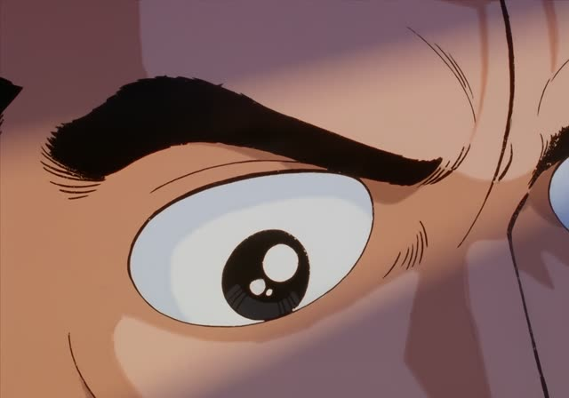

Causative form
| Polite | ～させます・～せます |
|---|---|
| Casual | ～させる る-verbs: drop る, add させる・～せる う-verbs: u-sound → a-sound, add せる |
Same meaning: "make or let someone do it". Only the politeness changes. する → させる, 来る → 来させる.
Shirokuma Cafe · Episode 12
少し休ませてもらってもいいですか？
"Could you let me rest a bit?"
The causative form means "make someone do it" or "let someone do it". 休む → 休ませる (let rest), 行く → 行かせる (make go, let go).
On this card, Handa is worn out and asks if he can rest. ～させてもらう = "get to do it (with your OK)". いいですか makes it polite.
The very common ～させてください means "please let me": 私にやらせてください.
Kotaro Lives Alone · Episode 2
何で一人で行かせたんだよ！
"Why did you let him go alone?!"
On this card, the neighbors panic: little Kotaro went to his entrance ceremony on his own. 行く → 行かせる: let him go.
Quick Examples
Your boss gives you a new task.
私にやらせてください。
"Please let me do it."
させてください: please let me.
PoliteTalking about your kid.
毎日野菜を食べさせてる。
"I make him eat vegetables every day."
食べる → 食べさせる.
CasualA teacher explains a rule.
生徒に本を読ませます。
"I have the students read books."
PoliteYour friend teases you.
泣かせるなよ。
"Don't make me cry."
泣く → 泣かせる.
CasualWith and without
子どもが野菜を食べる。
"The kid eats vegetables." His choice.
子どもに野菜を食べさせる。
"I make the kid eat vegetables." Someone makes him.
Examples from Media
Death Note · Episode 31
私もはっきりさせたいんです。
"I want to make things clear too."
はっきりする → はっきりさせる.
Kekkon Dekinai Otoko · Episode 1
すいません、気を遣わせてしまいまして。
"Sorry for making you worry about me."
気を遣う → 気を遣わせる.
Samurai Champloo · Episode 2
そろそろ終わらせていただきます。
"I'll be wrapping this up now."
させていただく: very polite "I'll do it".

Oishinbo · Episode 12
何度も気の済むまで作り直させた。
"He made her redo it again and again until he was satisfied."
Slam Dunk · Episode 44
打たせるな！絶対三井には打たせるな！
"Don't let him shoot! Don't let Mitsui shoot!"
Vinland Saga · Episode 17
よ～し、待たせたな、チンピラども！
"Alright, sorry to keep you waiting, punks!"
待つ → 待たせる: make someone wait.
Death Note · Episode 10
誰かにずっと監視させておくとか
"Like having someone watch me the whole time"
Dungeon Meshi · Episode 17
異国の話を聞かせてくれた。
"He told me stories of faraway lands."
聞かせる = let someone hear, so "tell".